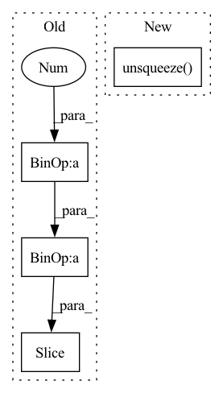

Pattern ID :11059
Before Change
istft = BatchInvSTFT(fft_size=fft_size, hop_size=hop_size)
spectrogram = stft(signal).squeeze(dim=0)
real = spectrogram[:fft_size//2+1 ]
imag = spectrogram[fft_size//2+1:]
amplitude = torch.sqrt(real**2 + imag**2)
power = amplitude**2After Change
estimated_amplitude = torch.sqrt(estimated_power)
ratio = estimated_amplitude / (amplitude + EPS)
estimated_real, estimated_imag = ratio * real, ratio * imag
estimated_spectrogram = torch.cat([estimated_real.unsqueeze(dim=2) , estimated_imag.unsqueeze(dim=2)], dim=2).unsqueeze(dim=0)
estimated_signal = istft(estimated_spectrogram, T=T)
estimated_signal = estimated_signal.squeeze(dim=0).numpy()In pattern: SUPERPATTERN
Frequency: 3
Non-data size: 4
Instances Fragment ID: 38070533
Project Name: tky823/dnn-based_source_separation
Commit Name: 3b739e7505b48c39e4ee06565e319cfda6649151
Time: 2020-12-26
Author: 40362510+tky823@users.noreply.github.com
File Name: src/algorithm/nmf.py
M Class Name: AnonimousClass
N Class Name: AnonimousClass
M Method Name: _test(1)
N Method Name: _test(1)
M Parent Class:
N Parent Class:
M File Name: src/algorithm/nmf.py
N File Name: src/algorithm/nmf.py
M Start Line: 106
M End Line: 139
N Start Line: 106
N End Line: 137
Before Change
for j in range(len(labels[i])):
if labels[i, j] == 1:
if j != len(labels[i])-1:
cur_query_matrix.extend(self.memory_matrix[j*self.num_prototype :(j+1 )* self.num_prototype, :])
else:
cur_query_matrix.extend(self.memory_matrix[j * self.num_prototype:, :])
After Change
// Memory querying and responding for visual features
dummy_memory_matrix = self.memory_matrix.unsqueeze( 0) .expand(att_feats.size(0), self.memory_matrix.size(0), self.memory_matrix.size(1))
responses = self.cmn(att_feats, dummy_memory_matrix, dummy_memory_matrix)
max_num_protype = max((labels[:,-1]*3 + labels[:,:-1].sum(-1))) * self.num_prototype Fragment ID: 38070548
Project Name: markin-wang/xpronet
Commit Name: 4ce89afc1120d8d6dd836304f6537d139f0505f1
Time: 2021-11-23
Author: cserwj@gmail.com
File Name: modules/base_cmn.py
M Class Name: BaseCMN
N Class Name: BaseCMN
M Method Name: _prepare_feature_forward(5)
N Method Name: _prepare_feature_forward(5)
M Parent Class: AttModel
N Parent Class: AttModel
M File Name: modules/base_cmn.py
N File Name: modules/base_cmn.py
M Start Line: 400
M End Line: 417
N Start Line: 400
N End Line: 401
Before Change
for j in range(len(labels[i])):
if labels[i, j] == 1:
if j != len(labels[i])-1:
query_matrix.extend(memory_matrix[j*self.num_prototype :(j+1 )* self.num_prototype, :])
else:
query_matrix.extend(memory_matrix[j * self.num_prototype:, :])
After Change
def decode(self, memory, src_mask, tgt, tgt_mask, past=None, memory_matrix=None, cmn_masks = None, labels = None):
embeddings = self.tgt_embed(tgt)
cmn_masks = cmn_masks.unsqueeze( 1) .expand(cmn_masks.shape[0], embeddings.size(1), cmn_masks.shape[-1])
// Memory querying and responding for textual features
//dummy_memory_matrix = memory_matrix.unsqueeze(0).expand(embeddings.size(0), memory_matrix.size(0), memory_matrix.size(1)) Fragment ID: 38070568
Project Name: markin-wang/xpronet
Commit Name: f1eadeb44fcd3ca935352b9cc7d30eab0fa8c753
Time: 2021-11-21
Author: cserwj@gmail.com
File Name: modules/base_cmn.py
M Class Name: Transformer
N Class Name: Transformer
M Method Name: decode(9)
N Method Name: decode(8)
M Parent Class: nn.Module
N Parent Class: nn.Module
M File Name: modules/base_cmn.py
N File Name: modules/base_cmn.py
M Start Line: 76
M End Line: 97
N Start Line: 76
N End Line: 86